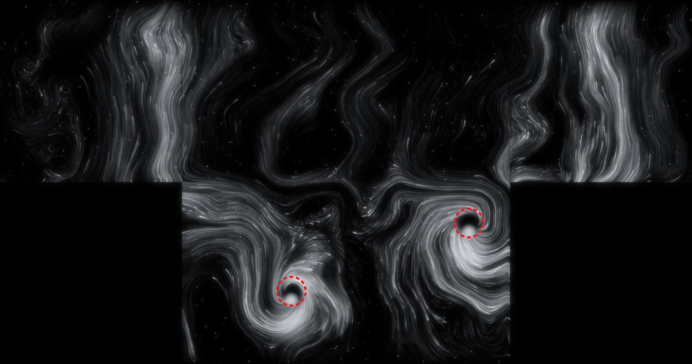

인터랙션 구현 영상 · 진행 보고
바닥 한 면만 반응하던 구조에서, 바닥에서 시작한 반응이 벽 3면까지 끊기지 않고 이어지는 구조로 바꿨습니다.
방을 전개도로 펼쳐 한 번만 계산하고, 네 면을 한 장의 그림에 담아 MadMapper로 넘깁니다.

좌벽정면우벽바닥구조 설계부터 현장 테스트 두 번까지 네 단계로 진행했습니다.
씬을 빌드해 호라이즌 스튜디오에서 처음 돌려, 사람이 존에 들어오고 나갈 때 반응이 들어가는지 확인했습니다.
감지된 위치에 빨간 점선 원을 띄우는 테스트용 빌드로, 센서가 잡은 자리와 실제 발 위치를 맞춰 봤습니다.
현장에서 구현한 인터랙션을 바탕으로, 다음 씬이 어떻게 이어질지를 생성형 영상으로 먼저 그려 봤습니다.
4면 투사와 반응은 작동했지만, 실제 공간에서 사람이 움직여 보고서야 보이는 문제들이 있었습니다.
현장 문제 외에, 기획과 개발 쪽에서 정리해야 할 항목입니다.
| 항목 | 현재 | 남은 문제 | 다음 단계 |
|---|---|---|---|
| 기획 방향 | 벽 3면도 관객에 반응하도록 변경 | 기존 기획은 ‘벽은 반응하지 않는 세계’였음 | 벽의 기존 영상 위에 실시간 반응을 얹는 방식으로 팀과 정리 |
| 다음 씬 전환 | 생성형 영상으로 방향만 확인 | 실시간 구현은 아직 없음 | 소용돌이로 모이는 힘을 추가해 같은 파티클로 전환 구현 |
| 실시간 성능 | 파티클 6.4만 개, 한 프레임 계산 약 10ms | 현장 PC에서 초당 60프레임 유지 여부 미확인 | 현장 PC에서 측정 후 파티클 수 조정 |
| 타인의 흔적 | 미구현 | 이전 관객의 움직임이 남는 기능이 기획에 있음 | 지나간 자리가 오래 남는 누적 레이어 추가 |
| 전시 운영 | 센서가 없을 때 가짜 사람이 자동으로 움직임 | 전시 중 켜져 있으면 빈 방에서도 반응이 나옴 | 전시용 PC에서 끄고 시작하도록 체크리스트에 추가 |
현장 테스트 영상 두 편과 다음 씬 프리비즈를 함께 첨부합니다.
| 구분 | 날짜 | 영상 | 결과 | YouTube |
|---|---|---|---|---|
| 기술 | 09.30 | 구현 후 첫 현장 테스트 | SUCCESS | |
| 기술 | 09.30 | 싱크 테스트 · 발밑 표식 | PARTIAL | |
| 디자인 | 09.30 | 다음 씬 프리비즈 (Higgsfield 생성) | PREVIZ |